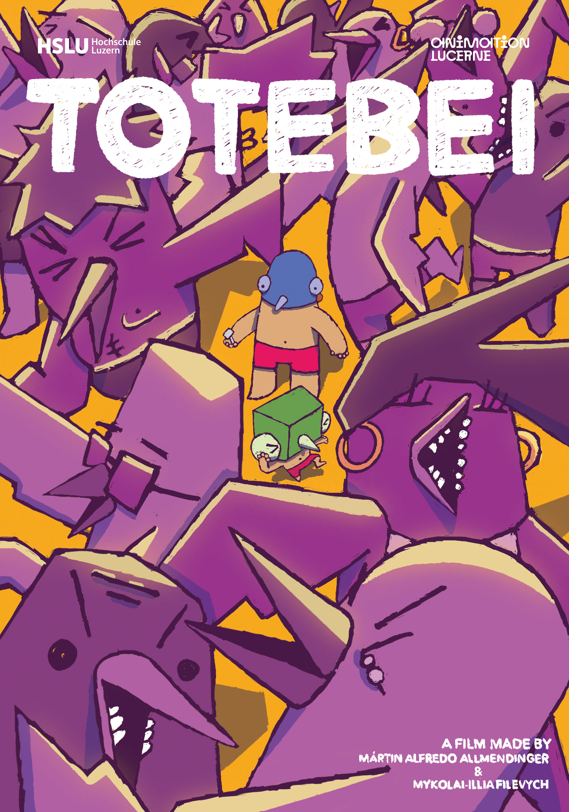
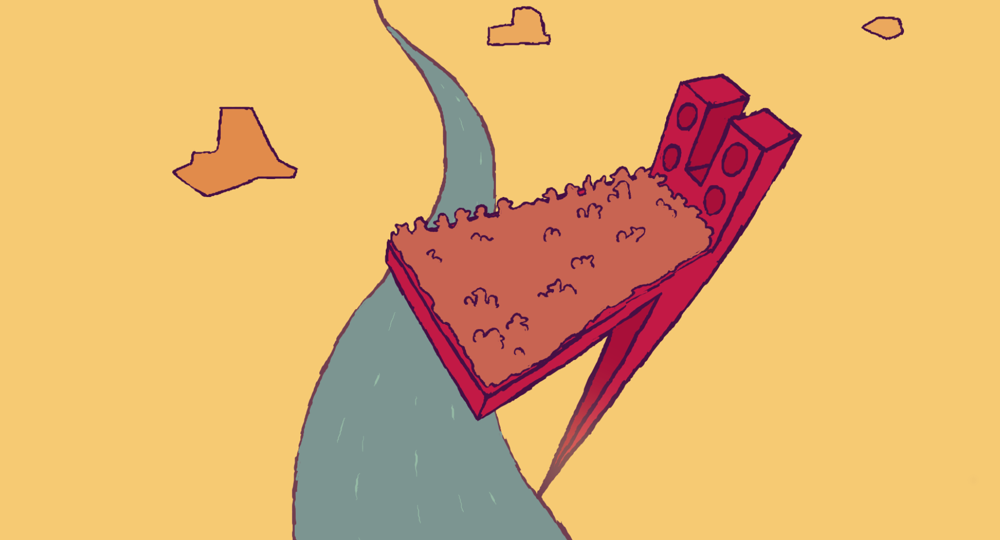

Totebei is a 2D animated short film created by Mykolai-Illia Filevych and Mártin Alfredo Allmendinger in 2025.
Birdmen are having a wild party on a giant diving platform, while two brothers watch the action from below. Elie, who is terrified of heights, reluctantly accompanies Joel, who is determined to jump, up the tower. Wearing homemade bird masks, the brothers sneak into the crowd, but soon find themselves in the spotlight of the whole party.
I you want to get more information about the movie click here. You can also find the trailer on Vimeo.
